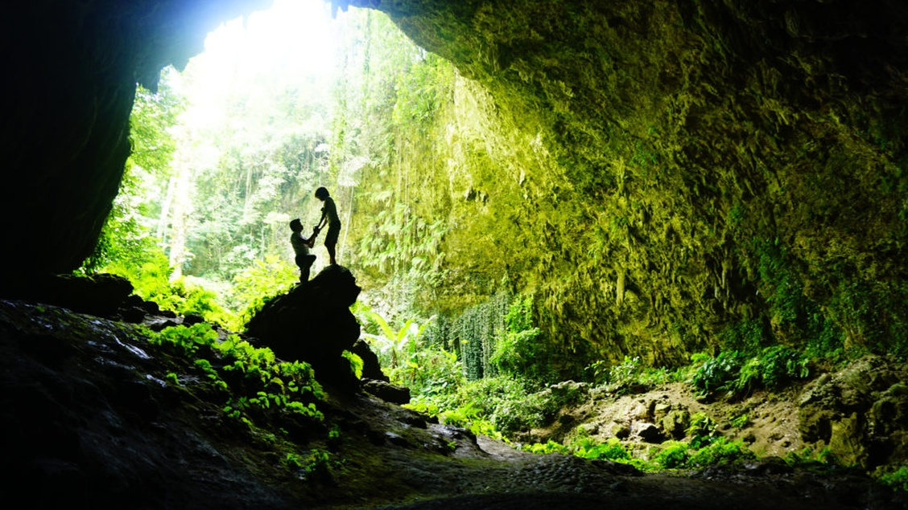
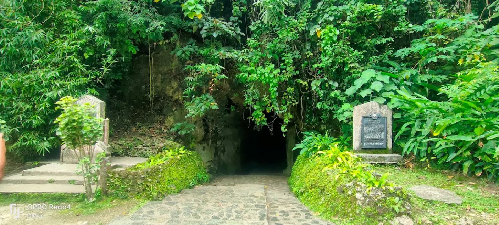

Macahambus Cava and Gorge


For travelers looking to combine raw natural beauty with a dash of adrenaline, Macahambus Cave and Gorge is an essential stop just 25 minutes from downtown Cagayan de Oro. Nestled within a lush tropical forest reserve, this eco-adventure destination features a short, walkable limestone cavern that opens up to a stunning veranda overlooking the winding Cagayan River. Just a short walk away, the spectacular doline gorge provides the ultimate terrain for outdoor enthusiasts, offering a thrilling 120-foot Sky Bridge, canopy walks, and heart-pounding rappelling routes down into a prehistoric forest floor.